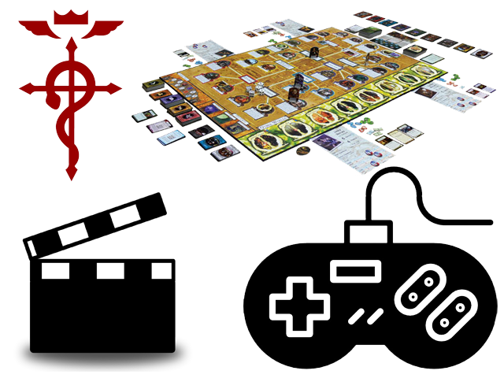

Welcome to Adam Gorbahn's Portfolio

About me
During my critical age of development, I was temporarily deaf. I regained my hearing months later, but was cursed with a speech impediment and a difficulty learning new things. Because of this, I was home schooled the majority of my childhood. I eventually enrolled in a community college named Cuesta College where I got my AA Degree in General Education. After my graduation, I enrolled in BYU-Idaho where I got my Bachelor of Science in Computer Science. During my time at BYU-Idaho, I took some jobs from the school where I learned more about C# and AngularJS. After I took a job as a remote developer using Laravel Framework. After working them, I realized that I needed to take a different path in my technical career. Because of this, I have decided to enroll in Epicodus. I have looked into this boot camp and I have heard many good things about it. I am hoping that I will become a better developer with your help and I look forward to working with you.
Skills
-
Coding
- MySQL
- MongoDB
- Java
- PHP
- JavaScript
-
Office skills
- Filing
- Powerpoint
- Word
-
Source Control
- GitHub
- SVN
-
Framework
- node.js
- Codelgniter
- Laravel
- Bootstrap
- Angularjs
-
IDE
- Netbean
- Intel XDK
- Virtual Studio
-
Markup
- HTML
- XHTML
- HTML5
- XML
- Schema
-
Other Software
- SubLime text
- Atom
- SourceTree
Hobbies
Some of my hobbies include: playing video games and board games. I like to watch anime' and watch movies with my family and friends. I am very skilled in coding, web development, and learning new technologies.